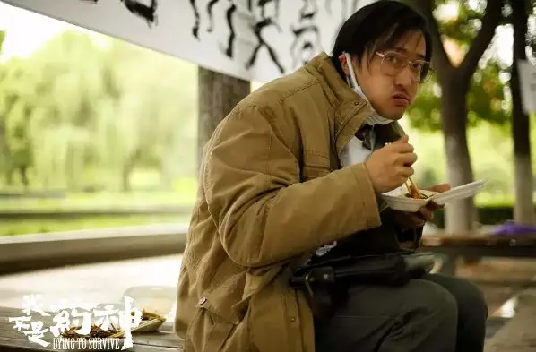
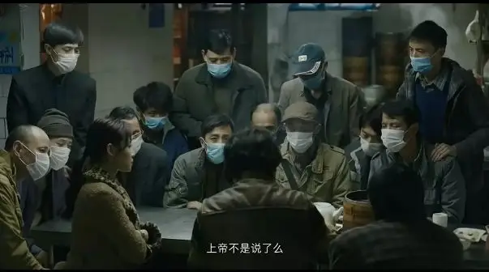
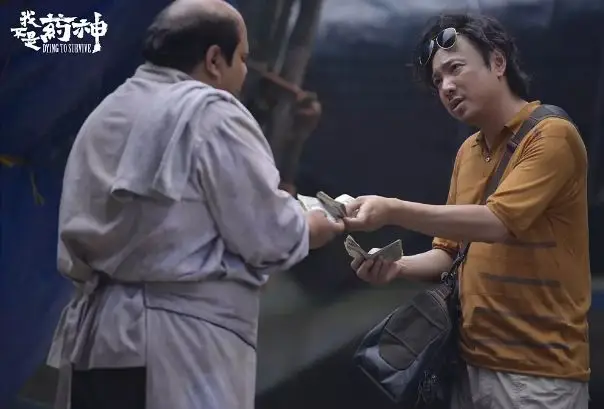
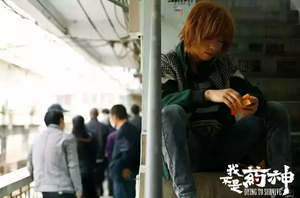
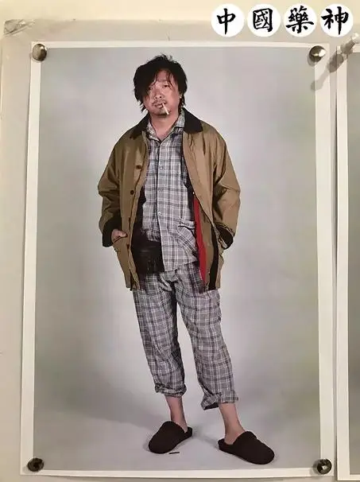

id="js_content" style="">

作者：顾顾
“药神”引爆在一群又一群人的心中，替我们感知了中国当下的社会。
原本到嘴边又咽下去沉默在尴尬里的话题，“药神”替我们说了出来。
原来你跟我在周遭的现实里，一样地关心着、彷徨着、恐惧着、想要呐喊，寻找依靠，呼唤一位“药神”。

你感受了很多，热血了很多，看了很多“正能量”的热点文章，期待出现一位“药神”，幻想自己成为别人的“药神”。
在这个“跳楼旁观”“泄愤砍人”“控告父母”“同床异梦”无可依靠的世代，想要被拯救，想要去拯救别人。
电影下线，仿作出现，横向对比越来越多的时候，一个月后，你可能就会冷静，甚至消极叹息，电影毕竟是电影。
“谁家还能没有个生老病死呢，你就能保证你一辈子不生病？”，我不想跟着电影呼唤真善美，角色可以设计对比，剧情可以铺垫升华，但人生不会。

程勇说得很清楚，他不是药神。
他，确实不是别人的“药神”。
你，也不会是。

药，可以解决，但谁来解决下面的问题：
生与死：烟雾缭绕中的湿婆，满是空位的教会，号贩和病人的医院，一户又一户的病号房。
生出来，就要活，死了，怎么体会“橘子”的味道呢？
利益的对立：强者，会一副墨镜毫无怜悯，弱者，同样也有聚众野蛮强盗逻辑。
谁制药？谁慈善？还有，谁洗碗？照顾一些人的生存，牺牲另一部分？试卷有答案，社会总很难有毫无疑义的认同。
制度与人情：情与理，有时候夹缝都没有。
“他只是想活下去”，没有错，但制度要照顾所有人活下去。
回避、绝望、妥协，有时候只是无奈，毕竟谁都不是人生的编剧，给自己一个瞬间搞定一切的“贺涵”。
边缘的挣扎与痛苦：排着队吊唁的白血病人，看一看自己将被怎样吊唁，看一看将要躺在那里的自己。
他们总算清楚了，无论贫富美丑，死亡才是最大的挣扎和让人痛苦的公平，所以他们被边缘了。
活在人视线里被追捧的，永远是那些尊奉“颜值即正义”“强权即真理”的人，正如“抖音”不欢迎无趣严肃。
主流社会不敢也不愿意正视死亡和软弱。

电影里的程勇没有白血病，贩药只是为赚钱走出绝境。
而现实中的陆勇是白血病人，他必须得救自己。
戏剧和现实，没有切身的绝境而被塑造成“药神”或者说“药侠”，在当下的中国文化语境中，无法成立。
与他无关，怎么成立？
所以电影中的程勇必须底层、必须离婚、必须破产没钱救父亲，否则故事怎样继续？

如果现实中的陆勇没有白血病呢？在他得知“印度格列宁”和“慢粒白血病”后，他是否会挺身而出，触犯法律呢？
真善美并不意味着圣人，简单点说，谁都上有老下有小身上有房贷，辞职尚且不敢，更难说面对这么大的抉择呢？
如果面对这个抉择的人是你呢？
我不想用真善美绑架你，人性，恐怕不能用毫不利己形容，何况毫不利己可能也为虚名。
社会的巨大漏洞如果要呼唤一个人变成“神”来拯救，甚至去对抗牺牲，那么只能说明这个社会依然懒惰推卸责任，活在幻想之中。
指望坐享其成的话，移民更快，毕竟，一个人怎么去拯救所有人呢，何况在一群人中坚持说实话尚且很难。
他不是“药神”，确实不是，你也不是，我们首先要摒弃的就是个人崇拜。
每个人要成为的不是“普度众生”的“药神”，而是一个好父亲、一个好丈夫、一个好母亲、一个好妻子、一个好孩子、一个好朋友、一个好陌生人，可以互相致意、微笑。
只愿你不是吃瓜群众，不是天台看客，不举起手机娱乐他人的痛苦、不在小视频中沉迷刺激、不在屏幕后占领道德制高点。
有悲悯宽容，有良善抉择，有设身处地，在自己的能力角色中尽好自己的责任。
这也许是作为个人最脚踏实地的方向。
相关推荐：
疯子带着瞎子走路，这正是我们时代的病态！
像猪一样活着，像猪一样死去 !
这里没有挑逗你眼目情欲的小鲜肉
也没有挑动你肉体情欲的段子
更没有膨胀你今生骄傲的鸡血
我们只在乎那些最质朴真诚的作品
在那里我们才能恢复真正的想象力
我们也坚信这才是我们真正需要的

ID:Six_hundred_hits
长按二维码，一键关注
【六百击】
-END-
电影评论
尽情分享朋友圈

苹果打赏通道
小提示：文末广告是腾讯配送广告，内容与本号无关，但您的每次点击（无需反复点）都会给平台带来几毛收益，欢迎您点击支持六百击。